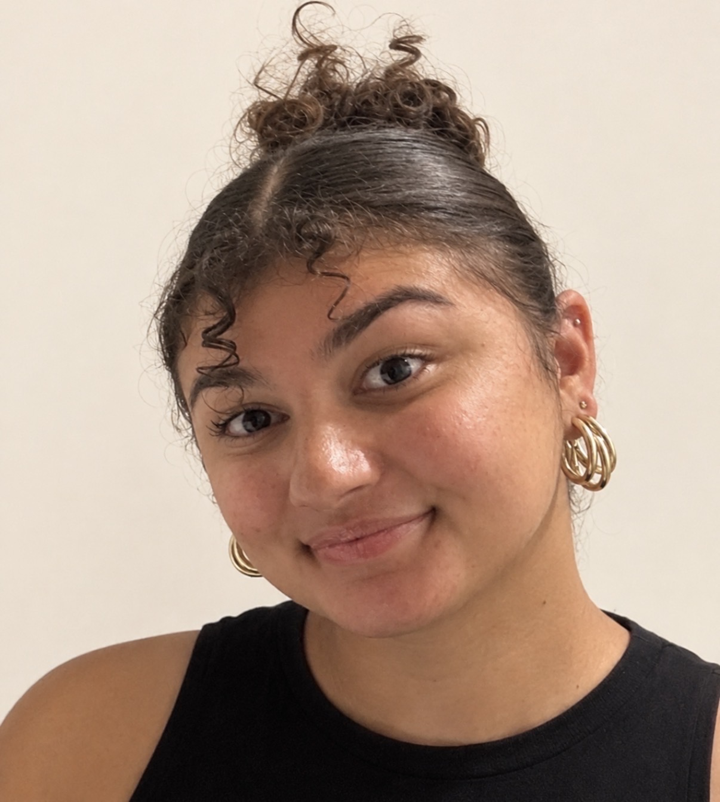

Communication digitale
Compréhension des réseaux sociaux, sensibilité à l'image de marque, connaissance des différents formats de publication.
Je suis Morgane PRELLE, étudiante en Bachelor Communication digitale. Je cherche une alternance en tant que chargée de communication ou chargée de marketing digital pour mettre ma créativité au service d'une marque et apprendre au sein d'une équipe.

Des bases solides, prêtes à être consolidées en entreprise.
Compréhension des réseaux sociaux, sensibilité à l'image de marque, connaissance des différents formats de publication.
Observation des tendances digitales, analyse des publications et des marques, recherche d'inspirations visuelles et éditoriales.
Création de visuels sur Canva, choix des couleurs, des images et des typographies, mise en page et présentation de contenus.
Ce qui me passionne dans le community management, c’est le mélange entre créativité, communication et stratégie, mais aussi la possibilité de donner une identité à une marque et de créer du lien avec sa communauté. Je souhaite aujourd’hui apprendre ce métier sur le terrain grâce à une alternance, développer mes compétences et mettre ma créativité, ma curiosité, mon sens de l’observation et mon envie d'apprendre au service d'une entreprise. Même si je débute dans ce domaine, je suis motivée, impliquée et prête à m'investir pleinement pour progresser et contribuer aux projets de l'équipe.— Ma motivation en quelques mots.